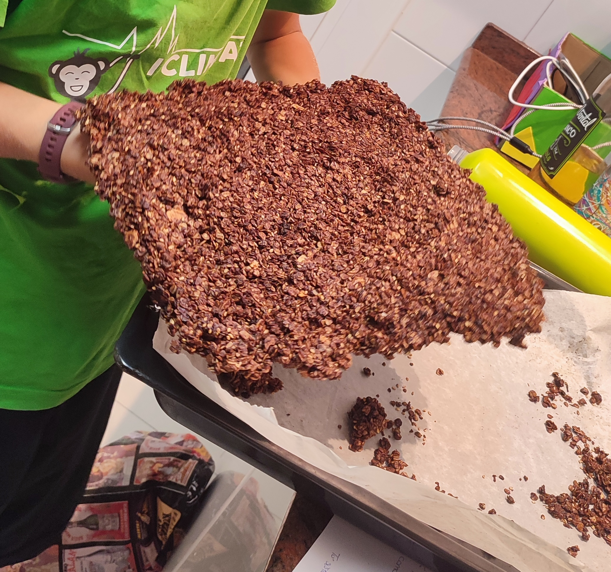
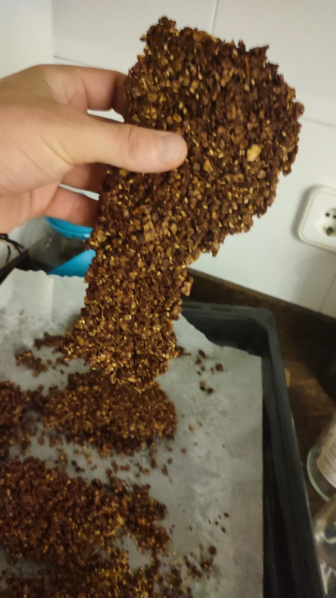

Crunchy Granola
Ingrédients
×
- 3 mugs de flocons d'avoine
- 4 c. à s. de cacao pur
- 3 c. à s. de coco râpée
- 1 c. à s. de graines de sésame
- 2 c. à s. d'amandes effilées
- 0.5 mug d'huile de coco
- 0.25 mug de sirop de riz
- 0.25 mug de sirop d'agave
- 1 c. à s. d'arôme de vanille
- papier sulfurisé
Classique économique.
Préparation
Étape 1
Mélanger 3 mugs de flocons d'avoine, 4 c. à s. de cacao pur, 3 c. à s. de coco râpée, 1 c. à s. de graines de sésame, 2 c. à s. d'amandes effilées.
Étape 2
Incorporer 0.5 mug d'huile de coco, 0.25 mug de sirop de riz, 0.25 mug de sirop d'agave, 1 c. à s. d'arôme de vanille.
Étape 3
Étaler sur du papier sulfurisé, mettre au four à 180ºC pendant 10min.
Étape 4
Remuer, et remettre au four pendant 6min.
Étape 5
Laisser refroidir et concasser.
Résumé
3 mugs de flocons d'avoine
4 c. à s. de cacao pur
3 c. à s. de coco râpée
1 c. à s. de graines de sésame
2 c. à s. d'amandes effilées
Mélanger
0.5 mug d'huile de coco
0.25 mug de sirop de riz
0.25 mug de sirop d'agave
1 c. à s. d'arôme de vanille
Incorporer
papier sulfurisé
mettre au four 180ºC
Remuer remettre au four
concasser

